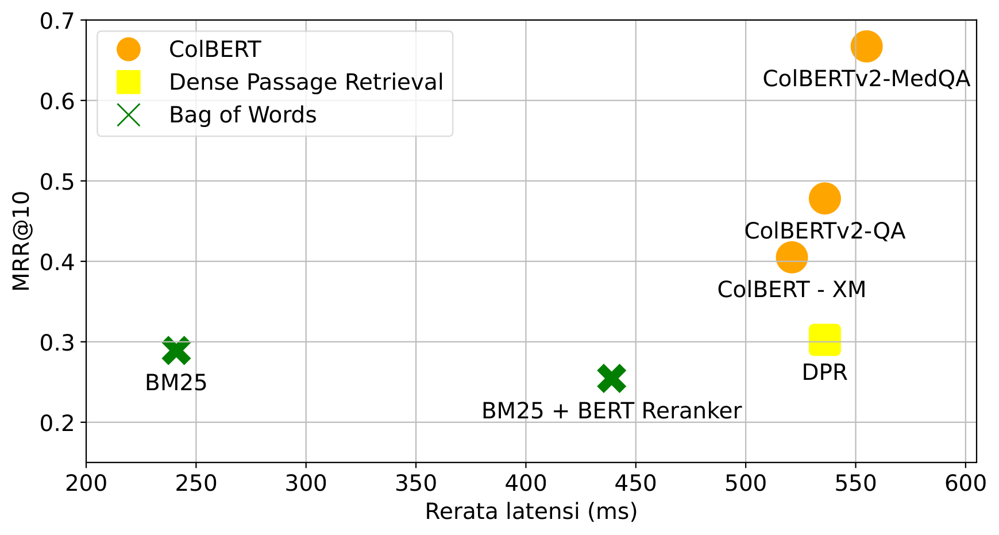
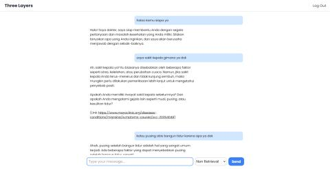

Consumer Health Question Answering
Python, ColBERT, Llama3-8B, Active Retrieval, Docker
Co-authored with Eryawan Presma Yulianrifat, Belati Jagad Bintang Syuhada, and supervised by Alfan Farizki Wicaksono.
Overview
An Indonesian consumer health consultation system that combines LLMs as the answer generator with retrieval models as the answer candidate retriever. The system addresses healthcare accessibility gaps in Indonesia, particularly in remote areas (3T regions) where medical facilities and professionals are scarce.
The system uses an Active Multi Retrieval approach: multiple domain-specific retrievers (doctor answers, disease info, medicine descriptions) supply relevant context to the LLM, and retrieval is triggered dynamically when the LLM generates low-confidence tokens, reducing hallucination.

Dataset
Built from Alodokter.com forum data, split into three aspects: doctor Q&A pairs (f), disease information (p), and medicine descriptions (o). Queries for disease and medicine data were generated synthetically using GPT-4o.
- Training: 800 doctor Q&A pairs + 800 medicine + 800 disease entries
- Evaluation: 200 doctor Q&A pairs (medicine and disease excluded to avoid synthetic bias)
- Each retrieval query paired with 9 BM25-sampled hard negatives (at 90th, 95th, 99th percentile)
Methodology
The system consists of two main modules:
Answer Candidate Retriever
ColBERT with an IndoBERT encoder, fine-tuned on the health forum dataset using ColBERTv2 training (KL-Divergence loss + hard negative sampling). Compared against BM25, BM25 + BERT reranker, Dense Passage Retrieval (DPR), and ColBERT-XM (zero-shot multilingual). The fine-tuned ColBERT achieved the best MRR@10 of 0.667.
Answer Generator
Four retrieval integration strategies were evaluated with multiple LLMs (Sailor-7B, Llama3-8B-Instruct, OpenOrcaPlatypus2-13B, ChatGPT3.5):
- Direct Prompting - LLM answers without any retrieved context
- Single Retrieval - one retrieval pass feeds context to the LLM
- Multi Retrieval - retrieves from all three collections (doctor answers, diseases, medicines) simultaneously
- Active Retrieval - retrieval triggered dynamically when LLM token confidence drops below a threshold
Retrieval Performance

Results
| Method | METEOR | ROUGE-L | GLEU | BERTScore | ||
|---|---|---|---|---|---|---|
| Precision | Recall | F1 | ||||
| Sailor-7B | ||||||
| Direct Prompt | 0.1187 | 0.1378 | 0.0014 | 0.7036 | 0.7662 | 0.7316 |
| Single Retrieval | 0.1185 | 0.1286 | 0.0048 | 0.6701 | 0.7603 | 0.7080 |
| Multi Retrieval | 0.1438 | 0.1569 | 0.0283 | 0.6715 | 0.7610 | 0.7088 |
| Active Retrieval | 0.0914 | 0.2933 | 0.0068 | 0.3493 | 0.4693 | 0.3836 |
| Llama3-8B-Instruct | ||||||
| Direct Prompt | 0.1274 | 0.1994 | 0.0045 | 0.8229 | 0.8452 | 0.8374 |
| Single Retrieval | 0.1580 | 0.2378 | 0.0174 | 0.8280 | 0.8443 | 0.8353 |
| Multi Retrieval | 0.1454 | 0.2165 | 0.0121 | 0.8235 | 0.8413 | 0.8319 |
| Active Retrieval | 0.0883 | 0.2793 | 0.0060 | 0.8773 | 0.8598 | 0.8682 |
| OpenOrcaPlatypus2-13B | ||||||
| Direct Prompt | 0.1739 | 0.2291 | 0.0078 | 0.8058 | 0.8319 | 0.8403 |
| Single Retrieval | 0.1732 | 0.2424 | 0.0107 | 0.8330 | 0.8494 | 0.8470 |
| Multi Retrieval | 0.1845 | 0.2478 | 0.0212 | 0.6747 | 0.7235 | 0.8459 |
| Active Retrieval | 0.0979 | 0.3035 | 0.0079 | 0.3869 | 0.4921 | 0.4181 |
| ChatGPT3.5 | ||||||
| Direct Prompt | 0.1274 | 0.1822 | 0.0014 | 0.8304 | 0.8507 | 0.8183 |
| Single Retrieval | 0.2255 | 0.2870 | 0.0735 | 0.8401 | 0.8543 | 0.8407 |
| Multi Retrieval | 0.2023 | 0.2627 | 0.0574 | 0.8379 | 0.8543 | 0.6917 |
Llama3-8B with Active Retrieval produces the most coherent outputs among open models, achieving competitive results with ChatGPT3.5 (175B parameters) despite being significantly smaller. Multi Retrieval with Llama3-8B generates the most complete and descriptive answers in qualitative evaluation.
Demo (Screenshot)

Links
- Paper (GEMASTIK XVII Data Mining, 2nd Winner)